Up to about.html
Niedersachsen, and its 45 districts (27.04.2020)
 total cases: [9, 18, 19, 23, 28, 42, 63, 78, 142, 237, 341, 360, 564, 732, 967, 1238, 1505, 1681, 1835, 2019, 2268, 2651, 3054, 3433, 3746, 4008, 4377, 4698, 5024, 5408, 5840, 6069, 6298, 6520, 6777, 7237, 7575, 7814, 8106, 8217, 8346, 8500, 8704, 8930, 9177, 9351, 9448, 9513, 9610, 9738, 9884, 9979, 10089, 10132, 29]
total cases: [9, 18, 19, 23, 28, 42, 63, 78, 142, 237, 341, 360, 564, 732, 967, 1238, 1505, 1681, 1835, 2019, 2268, 2651, 3054, 3433, 3746, 4008, 4377, 4698, 5024, 5408, 5840, 6069, 6298, 6520, 6777, 7237, 7575, 7814, 8106, 8217, 8346, 8500, 8704, 8930, 9177, 9351, 9448, 9513, 9610, 9738, 9884, 9979, 10089, 10132, 29]
population: 7,982,448 --> current prevalence: 3 known infected per 1 million population
Niedersachsen's 45 Kreise
Sorted by 'center day'
| 05.03.2020 | 06.03.2020 | 07.03.2020 | 08.03.2020 | 09.03.2020 | 10.03.2020 | 11.03.2020 | 12.03.2020 | 13.03.2020 | 14.03.2020 | 15.03.2020 | 16.03.2020 | 17.03.2020 | 18.03.2020 | 19.03.2020 | 20.03.2020 | 21.03.2020 | 22.03.2020 | 23.03.2020 | 24.03.2020 | 25.03.2020 | 26.03.2020 | 27.03.2020 | 28.03.2020 | 29.03.2020 | 30.03.2020 | 31.03.2020 | 01.04.2020 | 02.04.2020 | 03.04.2020 | 04.04.2020 | 05.04.2020 | 06.04.2020 | 07.04.2020 | 08.04.2020 | 09.04.2020 | 10.04.2020 | 11.04.2020 | 12.04.2020 | 13.04.2020 | 14.04.2020 | 15.04.2020 | 16.04.2020 | 17.04.2020 | 18.04.2020 | 19.04.2020 | 20.04.2020 | 21.04.2020 | 22.04.2020 | 23.04.2020 | 24.04.2020 | 25.04.2020 | 26.04.2020 | 27.04.2020 | Kreis | Population | Bundesland | center day |
| 0 | 0 | 0 | 0 | 0 | 0 | 0 | 0 | 0 | 3 | 4 | 4 | 14 | 19 | 32 | 45 | 51 | 61 | 70 | 75 | 83 | 94 | 115 | 127 | 142 | 158 | 200 | 208 | 234 | 270 | 286 | 312 | 340 | 351 | 370 | 399 | 433 | 470 | 488 | 520 | 551 | 555 | 578 | 607 | 664 | 690 | 702 | 702 | 723 | 736 | 740 | 746 | 758 | 767 | Göttingen_LK | 328,074 | Niedersachsen | 33.80 |
| 0 | 0 | 0 | 0 | 0 | 0 | 0 | 0 | 0 | 0 | 0 | 0 | 0 | 1 | 2 | 3 | 6 | 6 | 6 | 7 | 11 | 20 | 26 | 29 | 32 | 32 | 35 | 47 | 55 | 60 | 73 | 75 | 76 | 76 | 81 | 86 | 99 | 99 | 120 | 120 | 120 | 124 | 144 | 148 | 152 | 154 | 155 | 153 | 154 | 158 | 160 | 165 | 167 | 167 | Wolfenbüttel_LK | 119,960 | Niedersachsen | 33.62 |
| 0 | 0 | 0 | 0 | 0 | 0 | 0 | 0 | 0 | 0 | 5 | 5 | 7 | 7 | 14 | 14 | 18 | 18 | 21 | 22 | 24 | 31 | 40 | 46 | 51 | 51 | 60 | 61 | 61 | 60 | 70 | 74 | 82 | 87 | 89 | 90 | 98 | 112 | 112 | 114 | 114 | 118 | 122 | 133 | 133 | 139 | 139 | 145 | 162 | 166 | 183 | 178 | 178 | 178 | Goslar_LK | 137,014 | Niedersachsen | 33.60 |
| 0 | 0 | 0 | 0 | 0 | 0 | 0 | 0 | 3 | 4 | 5 | 5 | 7 | 7 | 7 | 13 | 17 | 17 | 17 | 22 | 27 | 29 | 32 | 33 | 33 | 33 | 40 | 41 | 42 | 49 | 53 | 53 | 53 | 62 | 62 | 64 | 67 | 73 | 73 | 79 | 85 | 87 | 90 | 96 | 98 | 102 | 102 | 106 | 107 | 111 | 115 | 115 | 117 | 117 | Northeim_LK | 132,765 | Niedersachsen | 32.03 |
| 0 | 0 | 0 | 0 | 0 | 3 | 3 | 3 | 5 | 11 | 11 | 11 | 11 | 18 | 39 | 48 | 62 | 74 | 87 | 87 | 95 | 114 | 126 | 134 | 149 | 154 | 156 | 168 | 208 | 228 | 265 | 266 | 275 | 291 | 298 | 316 | 330 | 344 | 355 | 372 | 374 | 386 | 392 | 402 | 415 | 431 | 438 | 438 | 444 | 460 | 467 | 471 | 484 | 485 | Harburg_LK | 252,776 | Niedersachsen | 30.90 |
| 0 | 1 | 1 | 1 | 1 | 2 | 2 | 2 | 15 | 15 | 39 | 39 | 47 | 50 | 61 | 74 | 91 | 107 | 119 | 134 | 146 | 175 | 213 | 236 | 256 | 279 | 288 | 319 | 331 | 361 | 418 | 448 | 472 | 512 | 531 | 629 | 658 | 679 | 743 | 750 | 750 | 768 | 790 | 805 | 824 | 847 | 846 | 875 | 880 | 886 | 892 | 906 | 920 | 915 | Osnabrück_LK | 357,343 | Niedersachsen | 30.89 |
| 0 | 0 | 0 | 0 | 0 | 0 | 0 | 0 | 1 | 1 | 2 | 2 | 2 | 2 | 2 | 3 | 9 | 11 | 13 | 14 | 14 | 18 | 24 | 24 | 31 | 31 | 39 | 38 | 38 | 38 | 46 | 50 | 56 | 57 | 58 | 60 | 65 | 76 | 86 | 88 | 88 | 89 | 89 | 93 | 94 | 94 | 94 | 94 | 96 | 96 | 97 | 97 | 97 | 99 | Cloppenburg_LK | 169,348 | Niedersachsen | 30.61 |
| 0 | 0 | 0 | 0 | 0 | 0 | 0 | 0 | 0 | 1 | 1 | 1 | 1 | 1 | 2 | 4 | 4 | 5 | 6 | 7 | 10 | 10 | 15 | 21 | 21 | 25 | 25 | 28 | 30 | 33 | 36 | 41 | 41 | 44 | 44 | 48 | 52 | 52 | 52 | 52 | 52 | 56 | 57 | 59 | 61 | 62 | 62 | 62 | 63 | 64 | 65 | 66 | 66 | 67 | Heidekreis_LK | 139,755 | Niedersachsen | 30.49 |
| 1 | 1 | 1 | 1 | 1 | 1 | 1 | 1 | 1 | 1 | 1 | 3 | 3 | 7 | 10 | 12 | 12 | 13 | 14 | 14 | 17 | 20 | 25 | 28 | 33 | 34 | 38 | 41 | 44 | 49 | 53 | 54 | 59 | 62 | 62 | 63 | 66 | 66 | 67 | 69 | 70 | 72 | 77 | 80 | 80 | 85 | 86 | 86 | 89 | 90 | 90 | 91 | 91 | 93 | Leer_LK | 169,809 | Niedersachsen | 30.36 |
| 0 | 0 | 0 | 0 | 0 | 0 | 0 | 0 | 1 | 1 | 2 | 2 | 2 | 3 | 5 | 10 | 18 | 23 | 25 | 26 | 30 | 34 | 41 | 44 | 45 | 45 | 53 | 55 | 58 | 61 | 64 | 67 | 70 | 72 | 72 | 85 | 94 | 97 | 97 | 97 | 99 | 100 | 102 | 107 | 110 | 113 | 115 | 117 | 117 | 119 | 126 | 126 | 126 | 127 | Salzgitter_KS | 104,948 | Niedersachsen | 30.35 |
| 0 | 0 | 0 | 0 | 0 | 0 | 1 | 1 | 3 | 4 | 10 | 10 | 31 | 36 | 43 | 51 | 56 | 63 | 64 | 67 | 78 | 93 | 102 | 114 | 136 | 140 | 146 | 149 | 165 | 175 | 181 | 191 | 200 | 201 | 213 | 244 | 255 | 264 | 294 | 298 | 309 | 317 | 330 | 342 | 360 | 364 | 366 | 366 | 371 | 374 | 379 | 384 | 384 | 385 | Emsland_LK | 325,657 | Niedersachsen | 30.34 |
| 0 | 1 | 1 | 1 | 1 | 1 | 1 | 1 | 1 | 5 | 5 | 5 | 5 | 5 | 5 | 8 | 8 | 8 | 8 | 8 | 12 | 13 | 16 | 17 | 17 | 17 | 20 | 22 | 24 | 24 | 25 | 26 | 26 | 26 | 26 | 27 | 29 | 29 | 29 | 31 | 31 | 31 | 32 | 33 | 34 | 34 | 37 | 37 | 38 | 40 | 41 | 41 | 43 | 44 | Delmenhorst_KS | 77,607 | Niedersachsen | 30.14 |
| 0 | 0 | 0 | 0 | 0 | 0 | 0 | 0 | 1 | 2 | 2 | 2 | 4 | 5 | 12 | 19 | 23 | 27 | 29 | 32 | 32 | 38 | 44 | 48 | 53 | 53 | 53 | 54 | 59 | 62 | 71 | 78 | 81 | 81 | 83 | 91 | 106 | 112 | 120 | 120 | 122 | 122 | 125 | 128 | 132 | 133 | 140 | 139 | 138 | 138 | 139 | 141 | 142 | 143 | Schaumburg_LK | 157,781 | Niedersachsen | 29.67 |
| 1 | 1 | 1 | 1 | 1 | 1 | 1 | 1 | 1 | 3 | 5 | 5 | 5 | 11 | 15 | 23 | 23 | 29 | 29 | 29 | 35 | 44 | 52 | 62 | 82 | 84 | 87 | 92 | 101 | 109 | 121 | 130 | 132 | 137 | 152 | 160 | 166 | 170 | 178 | 180 | 181 | 186 | 188 | 196 | 199 | 205 | 206 | 206 | 207 | 209 | 213 | 213 | 215 | 216 | Grafschaft Bentheim_LK | 136,511 | Niedersachsen | 29.60 |
| 2 | 3 | 3 | 3 | 4 | 7 | 11 | 17 | 25 | 59 | 60 | 60 | 121 | 138 | 173 | 238 | 304 | 310 | 341 | 368 | 428 | 510 | 588 | 661 | 692 | 738 | 811 | 867 | 911 | 976 | 1039 | 1072 | 1110 | 1165 | 1234 | 1310 | 1389 | 1402 | 1454 | 1462 | 1482 | 1519 | 1541 | 1572 | 1619 | 1663 | 1694 | 1711 | 1719 | 1749 | 1793 | 1819 | 1847 | 1864 | Region Hannover_LK | 1,157,624 | Niedersachsen | 29.54 |
| 0 | 0 | 0 | 0 | 0 | 0 | 2 | 2 | 2 | 2 | 2 | 2 | 3 | 3 | 3 | 3 | 3 | 5 | 6 | 6 | 7 | 7 | 8 | 9 | 10 | 10 | 10 | 12 | 15 | 18 | 20 | 20 | 20 | 22 | 23 | 24 | 24 | 24 | 25 | 25 | 28 | 28 | 28 | 28 | 30 | 30 | 30 | 31 | 31 | 31 | 31 | 31 | 32 | 32 | Friesland_LK | 98,460 | Niedersachsen | 29.06 |
| 0 | 0 | 0 | 0 | 0 | 0 | 0 | 0 | 0 | 2 | 2 | 2 | 2 | 2 | 5 | 9 | 9 | 16 | 18 | 18 | 24 | 26 | 39 | 45 | 45 | 53 | 60 | 65 | 69 | 76 | 78 | 82 | 82 | 84 | 84 | 91 | 105 | 130 | 130 | 141 | 141 | 141 | 152 | 153 | 157 | 157 | 157 | 127 | 127 | 128 | 128 | 130 | 140 | 143 | Helmstedt_LK | 91,307 | Niedersachsen | 29.00 |
| 0 | 1 | 1 | 1 | 1 | 1 | 1 | 1 | 4 | 4 | 4 | 4 | 4 | 8 | 9 | 12 | 15 | 16 | 16 | 16 | 25 | 33 | 45 | 56 | 60 | 96 | 108 | 113 | 119 | 146 | 159 | 159 | 169 | 169 | 185 | 182 | 182 | 190 | 190 | 190 | 195 | 202 | 202 | 203 | 208 | 208 | 212 | 216 | 216 | 216 | 218 | 225 | 225 | 226 | Oldenburg_LK | 130,144 | Niedersachsen | 28.92 |
| 0 | 0 | 0 | 0 | 0 | 0 | 0 | 0 | 3 | 11 | 21 | 21 | 25 | 35 | 37 | 47 | 63 | 75 | 75 | 90 | 100 | 102 | 111 | 117 | 126 | 126 | 138 | 154 | 166 | 184 | 204 | 211 | 221 | 222 | 233 | 247 | 255 | 255 | 264 | 264 | 274 | 279 | 287 | 291 | 295 | 299 | 299 | 310 | 316 | 317 | 323 | 331 | 334 | 334 | Diepholz_LK | 216,886 | Niedersachsen | 28.57 |
| 0 | 0 | 0 | 0 | 0 | 0 | 2 | 2 | 2 | 2 | 2 | 2 | 3 | 3 | 5 | 5 | 5 | 5 | 5 | 5 | 6 | 6 | 6 | 6 | 6 | 6 | 6 | 7 | 7 | 7 | 8 | 9 | 10 | 10 | 11 | 13 | 13 | 13 | 13 | 15 | 15 | 15 | 16 | 17 | 17 | 17 | 17 | 17 | 17 | 17 | 17 | 17 | 17 | 18 | Wilhelmshaven_KS | 76,278 | Niedersachsen | 28.44 |
| 1 | 1 | 1 | 1 | 1 | 1 | 1 | 1 | 1 | 7 | 7 | 7 | 7 | 11 | 14 | 17 | 20 | 21 | 24 | 33 | 36 | 44 | 50 | 56 | 64 | 77 | 82 | 88 | 93 | 99 | 103 | 107 | 111 | 115 | 119 | 132 | 138 | 140 | 141 | 141 | 149 | 149 | 153 | 158 | 160 | 164 | 165 | 165 | 167 | 168 | 168 | 168 | 169 | 169 | Ammerland_LK | 124,071 | Niedersachsen | 28.22 |
| 0 | 0 | 0 | 0 | 0 | 0 | 0 | 1 | 1 | 1 | 1 | 1 | 1 | 1 | 3 | 3 | 5 | 7 | 7 | 11 | 12 | 15 | 16 | 19 | 23 | 24 | 25 | 25 | 26 | 26 | 27 | 28 | 29 | 29 | 29 | 31 | 33 | 33 | 33 | 34 | 34 | 34 | 34 | 39 | 41 | 41 | 41 | 41 | 41 | 42 | 42 | 43 | 43 | 43 | Uelzen_LK | 92,572 | Niedersachsen | 27.98 |
| 0 | 0 | 0 | 0 | 0 | 0 | 0 | 0 | 0 | 2 | 3 | 3 | 3 | 4 | 8 | 10 | 14 | 16 | 20 | 28 | 31 | 40 | 51 | 98 | 122 | 145 | 163 | 171 | 184 | 195 | 217 | 217 | 221 | 222 | 225 | 228 | 235 | 241 | 248 | 248 | 249 | 249 | 250 | 253 | 259 | 266 | 271 | 272 | 272 | 277 | 280 | 280 | 280 | 282 | Wolfsburg_KS | 124,151 | Niedersachsen | 27.93 |
| 1 | 1 | 2 | 2 | 2 | 3 | 3 | 3 | 4 | 5 | 5 | 5 | 5 | 13 | 22 | 28 | 28 | 32 | 34 | 38 | 39 | 39 | 46 | 49 | 53 | 53 | 54 | 55 | 56 | 59 | 60 | 63 | 63 | 65 | 65 | 70 | 72 | 74 | 75 | 76 | 77 | 78 | 79 | 79 | 79 | 79 | 81 | 82 | 83 | 85 | 88 | 92 | 97 | 98 | Cuxhaven_LK | 198,213 | Niedersachsen | 27.76 |
| 0 | 1 | 1 | 1 | 1 | 1 | 1 | 1 | 2 | 2 | 5 | 5 | 8 | 12 | 13 | 18 | 25 | 29 | 56 | 58 | 63 | 73 | 80 | 94 | 109 | 138 | 144 | 148 | 169 | 189 | 209 | 216 | 225 | 231 | 232 | 241 | 247 | 269 | 271 | 271 | 273 | 275 | 279 | 284 | 287 | 289 | 291 | 291 | 292 | 292 | 294 | 294 | 299 | 300 | Braunschweig_KS | 248,292 | Niedersachsen | 27.67 |
| 0 | 0 | 0 | 0 | 0 | 0 | 0 | 1 | 1 | 2 | 3 | 3 | 7 | 9 | 13 | 19 | 23 | 26 | 27 | 28 | 28 | 32 | 38 | 44 | 60 | 70 | 70 | 73 | 79 | 82 | 83 | 89 | 89 | 89 | 92 | 94 | 97 | 99 | 100 | 100 | 102 | 103 | 108 | 109 | 112 | 114 | 116 | 116 | 120 | 122 | 122 | 123 | 123 | 123 | Hameln-Pyrmont_LK | 148,559 | Niedersachsen | 27.31 |
| 0 | 0 | 0 | 0 | 0 | 0 | 0 | 0 | 2 | 2 | 3 | 3 | 6 | 6 | 17 | 22 | 33 | 47 | 54 | 59 | 63 | 92 | 94 | 115 | 128 | 133 | 156 | 179 | 194 | 200 | 211 | 224 | 230 | 235 | 244 | 253 | 261 | 268 | 271 | 272 | 275 | 277 | 283 | 287 | 292 | 296 | 298 | 299 | 300 | 302 | 304 | 305 | 306 | 307 | Vechta_LK | 141,598 | Niedersachsen | 27.26 |
| 0 | 3 | 3 | 3 | 3 | 3 | 4 | 5 | 6 | 6 | 8 | 8 | 12 | 15 | 21 | 27 | 36 | 36 | 36 | 44 | 50 | 55 | 61 | 69 | 70 | 72 | 89 | 98 | 102 | 106 | 110 | 110 | 110 | 116 | 119 | 124 | 129 | 129 | 134 | 134 | 140 | 144 | 145 | 152 | 153 | 153 | 153 | 155 | 156 | 158 | 161 | 164 | 164 | 164 | Celle_LK | 178,936 | Niedersachsen | 27.00 |
| 0 | 0 | 0 | 0 | 0 | 0 | 0 | 0 | 0 | 0 | 0 | 0 | 0 | 0 | 0 | 1 | 6 | 6 | 6 | 6 | 6 | 7 | 7 | 9 | 9 | 9 | 8 | 8 | 10 | 11 | 12 | 12 | 13 | 13 | 14 | 14 | 14 | 14 | 14 | 14 | 14 | 14 | 15 | 15 | 15 | 15 | 15 | 15 | 15 | 17 | 17 | 17 | 17 | 17 | Lüchow-Dannenberg_LK | 48,424 | Niedersachsen | 26.88 |
| 0 | 0 | 0 | 2 | 2 | 2 | 3 | 3 | 3 | 3 | 14 | 31 | 31 | 44 | 66 | 84 | 89 | 97 | 97 | 100 | 114 | 123 | 144 | 152 | 152 | 152 | 153 | 161 | 172 | 180 | 189 | 197 | 197 | 197 | 204 | 211 | 215 | 224 | 226 | 227 | 227 | 230 | 237 | 251 | 259 | 262 | 269 | 273 | 277 | 285 | 290 | 290 | 292 | 292 | Hildesheim_LK | 276,594 | Niedersachsen | 26.62 |
| 0 | 0 | 0 | 0 | 0 | 0 | 0 | 0 | 0 | 0 | 2 | 2 | 2 | 8 | 8 | 11 | 15 | 20 | 21 | 21 | 25 | 31 | 40 | 40 | 54 | 62 | 77 | 90 | 94 | 99 | 105 | 108 | 110 | 110 | 117 | 122 | 124 | 125 | 126 | 127 | 127 | 127 | 129 | 131 | 132 | 133 | 133 | 133 | 135 | 135 | 136 | 136 | 137 | 137 | Peine_LK | 133,965 | Niedersachsen | 26.58 |
| 0 | 0 | 0 | 0 | 0 | 1 | 1 | 1 | 7 | 7 | 19 | 19 | 38 | 54 | 62 | 83 | 101 | 108 | 119 | 135 | 145 | 174 | 197 | 199 | 215 | 224 | 249 | 259 | 267 | 276 | 285 | 300 | 312 | 322 | 332 | 368 | 377 | 382 | 400 | 404 | 404 | 409 | 416 | 425 | 434 | 437 | 437 | 446 | 447 | 450 | 453 | 454 | 458 | 458 | Osnabrück_KS | 164,748 | Niedersachsen | 26.55 |
| 2 | 2 | 2 | 2 | 2 | 2 | 3 | 5 | 5 | 5 | 7 | 7 | 18 | 18 | 19 | 22 | 25 | 30 | 34 | 34 | 36 | 38 | 42 | 49 | 50 | 54 | 55 | 55 | 58 | 63 | 66 | 67 | 72 | 73 | 75 | 76 | 78 | 79 | 81 | 82 | 86 | 87 | 88 | 92 | 96 | 96 | 96 | 97 | 97 | 98 | 98 | 99 | 99 | 100 | Rotenburg (Wümme)_LK | 163,455 | Niedersachsen | 26.31 |
| 1 | 1 | 1 | 2 | 2 | 2 | 6 | 6 | 6 | 11 | 11 | 11 | 18 | 25 | 26 | 30 | 31 | 31 | 31 | 49 | 61 | 74 | 76 | 91 | 91 | 91 | 107 | 111 | 116 | 130 | 143 | 143 | 143 | 159 | 162 | 173 | 184 | 184 | 184 | 184 | 184 | 189 | 190 | 190 | 194 | 194 | 194 | 196 | 196 | 196 | 202 | 202 | 202 | 202 | Oldenburg (Oldb)_KS | 168,210 | Niedersachsen | 26.21 |
| 0 | 0 | 0 | 0 | 0 | 0 | 0 | 0 | 1 | 1 | 1 | 1 | 9 | 13 | 14 | 19 | 23 | 27 | 27 | 29 | 30 | 36 | 39 | 44 | 47 | 47 | 55 | 62 | 62 | 70 | 73 | 76 | 79 | 79 | 79 | 85 | 91 | 92 | 95 | 95 | 95 | 95 | 95 | 98 | 99 | 99 | 99 | 100 | 100 | 103 | 103 | 104 | 104 | 104 | Holzminden_LK | 70,975 | Niedersachsen | 26.12 |
| 0 | 0 | 0 | 0 | 0 | 0 | 0 | 1 | 1 | 1 | 1 | 1 | 3 | 3 | 3 | 4 | 4 | 4 | 4 | 6 | 6 | 8 | 10 | 14 | 16 | 16 | 15 | 15 | 15 | 16 | 16 | 16 | 16 | 16 | 19 | 20 | 20 | 20 | 20 | 20 | 21 | 21 | 21 | 21 | 22 | 22 | 24 | 24 | 24 | 24 | 24 | 24 | 24 | 24 | Wittmund_LK | 56,882 | Niedersachsen | 26.08 |
| 0 | 0 | 0 | 0 | 0 | 0 | 0 | 0 | 2 | 2 | 2 | 2 | 5 | 6 | 6 | 8 | 15 | 15 | 17 | 19 | 21 | 22 | 22 | 24 | 26 | 27 | 29 | 36 | 38 | 39 | 42 | 42 | 52 | 52 | 54 | 56 | 60 | 60 | 60 | 60 | 60 | 60 | 62 | 62 | 63 | 63 | 63 | 64 | 64 | 64 | 64 | 64 | 64 | 64 | Nienburg (Weser)_LK | 121,386 | Niedersachsen | 25.84 |
| 0 | 0 | 0 | 0 | 0 | 0 | 0 | 0 | 0 | 5 | 7 | 7 | 16 | 20 | 23 | 26 | 32 | 34 | 34 | 37 | 39 | 43 | 48 | 53 | 62 | 62 | 68 | 78 | 77 | 87 | 92 | 95 | 96 | 99 | 103 | 107 | 106 | 106 | 109 | 109 | 109 | 110 | 115 | 119 | 122 | 123 | 122 | 122 | 122 | 122 | 123 | 124 | 124 | 124 | Gifhorn_LK | 175,920 | Niedersachsen | 25.28 |
| 0 | 0 | 0 | 0 | 0 | 0 | 0 | 0 | 1 | 1 | 3 | 3 | 6 | 26 | 42 | 45 | 53 | 54 | 61 | 61 | 65 | 69 | 71 | 75 | 82 | 82 | 82 | 97 | 100 | 108 | 113 | 119 | 120 | 122 | 125 | 132 | 134 | 140 | 144 | 145 | 148 | 154 | 157 | 162 | 166 | 168 | 168 | 168 | 168 | 164 | 164 | 164 | 164 | 164 | Lüneburg_LK | 183,372 | Niedersachsen | 24.98 |
| 0 | 0 | 0 | 0 | 0 | 0 | 1 | 1 | 1 | 3 | 12 | 12 | 16 | 17 | 22 | 27 | 27 | 31 | 31 | 31 | 34 | 41 | 48 | 48 | 49 | 49 | 54 | 58 | 64 | 69 | 71 | 71 | 72 | 72 | 74 | 78 | 78 | 79 | 79 | 79 | 79 | 80 | 80 | 80 | 80 | 80 | 82 | 84 | 86 | 89 | 90 | 92 | 92 | 92 | Aurich_LK | 189,848 | Niedersachsen | 24.82 |
| 0 | 0 | 0 | 0 | 0 | 0 | 2 | 3 | 5 | 8 | 8 | 8 | 12 | 14 | 20 | 23 | 24 | 26 | 27 | 33 | 37 | 37 | 43 | 48 | 50 | 57 | 58 | 73 | 80 | 82 | 96 | 96 | 96 | 100 | 106 | 107 | 107 | 107 | 107 | 107 | 107 | 110 | 111 | 113 | 113 | 113 | 113 | 114 | 114 | 116 | 116 | 116 | 116 | 116 | Verden_LK | 136,792 | Niedersachsen | 24.73 |
| 0 | 0 | 0 | 0 | 0 | 0 | 2 | 2 | 8 | 12 | 12 | 12 | 16 | 20 | 20 | 22 | 24 | 24 | 24 | 27 | 29 | 32 | 36 | 42 | 42 | 42 | 49 | 50 | 55 | 56 | 57 | 57 | 57 | 60 | 60 | 64 | 64 | 64 | 65 | 68 | 68 | 71 | 73 | 73 | 73 | 73 | 74 | 74 | 75 | 76 | 78 | 79 | 79 | 79 | Osterholz_LK | 113,517 | Niedersachsen | 24.65 |
| 0 | 1 | 1 | 2 | 6 | 11 | 11 | 13 | 14 | 17 | 21 | 21 | 24 | 28 | 33 | 37 | 43 | 58 | 58 | 66 | 73 | 80 | 92 | 103 | 105 | 109 | 115 | 117 | 123 | 127 | 135 | 141 | 152 | 153 | 156 | 160 | 162 | 165 | 170 | 170 | 172 | 173 | 176 | 177 | 177 | 177 | 179 | 177 | 177 | 180 | 182 | 184 | 185 | 185 | Stade_LK | 203,102 | Niedersachsen | 23.87 |
| 0 | 0 | 0 | 0 | 0 | 0 | 0 | 0 | 3 | 3 | 3 | 3 | 4 | 4 | 7 | 7 | 7 | 8 | 8 | 8 | 8 | 9 | 9 | 9 | 9 | 9 | 7 | 8 | 10 | 8 | 8 | 10 | 11 | 12 | 13 | 14 | 14 | 14 | 14 | 14 | 14 | 14 | 14 | 15 | 15 | 15 | 15 | 15 | 15 | 16 | 16 | 16 | 16 | 16 | Emden_KS | 50,195 | Niedersachsen | 23.56 |
| 0 | 0 | 0 | 0 | 0 | 0 | 0 | 0 | 0 | 0 | 0 | 0 | 0 | 0 | 4 | 4 | 5 | 5 | 9 | 11 | 13 | 20 | 26 | 32 | 38 | 39 | 40 | 42 | 43 | 45 | 47 | 47 | 47 | 48 | 48 | 48 | 49 | 49 | 49 | 49 | 51 | 52 | 52 | 52 | 52 | 52 | 52 | 52 | 52 | 52 | 52 | 52 | 52 | 52 | Wesermarsch_LK | 88,624 | Niedersachsen | 23.54 |
Göttingen (Landkreis #3159, Niedersachsen) Population=328074 AGS=3159
Neighbours within 50 km: Eichsfeld_LK, Northeim_LK, Werra-Meißner-Kreis_LK, Kassel_LK, Kassel_KS, Holzminden_LK
 Total cases: [0, 0, 0, 0, 0, 0, 0, 0, 0, 3, 4, 4, 14, 19, 32, 45, 51, 61, 70, 75, 83, 94, 115, 127, 142, 158, 200, 208, 234, 270, 286, 312, 340, 351, 370, 399, 433, 470, 488, 520, 551, 555, 578, 607, 664, 690, 702, 702, 723, 736, 740, 746, 758, 767]
Total cases: [0, 0, 0, 0, 0, 0, 0, 0, 0, 3, 4, 4, 14, 19, 32, 45, 51, 61, 70, 75, 83, 94, 115, 127, 142, 158, 200, 208, 234, 270, 286, 312, 340, 351, 370, 399, 433, 470, 488, 520, 551, 555, 578, 607, 664, 690, 702, 702, 723, 736, 740, 746, 758, 767]
Landkreis Göttingen population: 328,074 --> current prevalence: 2337 known infected per 1 million people.
Back to top or: Up to about.html
Wolfenbüttel (Landkreis #3158, Niedersachsen) Population=119960 AGS=3158
Neighbours within 50 km: Salzgitter_KS, Braunschweig_KS, Helmstedt_LK, Peine_LK, Goslar_LK, Wolfsburg_KS, Harz_LK, Hildesheim_LK
 Total cases: [0, 0, 0, 0, 0, 0, 0, 0, 0, 0, 0, 0, 0, 1, 2, 3, 6, 6, 6, 7, 11, 20, 26, 29, 32, 32, 35, 47, 55, 60, 73, 75, 76, 76, 81, 86, 99, 99, 120, 120, 120, 124, 144, 148, 152, 154, 155, 153, 154, 158, 160, 165, 167, 167]
Total cases: [0, 0, 0, 0, 0, 0, 0, 0, 0, 0, 0, 0, 0, 1, 2, 3, 6, 6, 6, 7, 11, 20, 26, 29, 32, 32, 35, 47, 55, 60, 73, 75, 76, 76, 81, 86, 99, 99, 120, 120, 120, 124, 144, 148, 152, 154, 155, 153, 154, 158, 160, 165, 167, 167]
Landkreis Wolfenbüttel population: 119,960 --> current prevalence: 1392 known infected per 1 million people.
Back to top or: Up to about.html
Goslar (Landkreis #3153, Niedersachsen) Population=137014 AGS=3153
Neighbours within 50 km: Salzgitter_KS, Wolfenbüttel_LK, Harz_LK, Hildesheim_LK, Northeim_LK, Braunschweig_KS, Nordhausen_LK, Peine_LK
 Total cases: [0, 0, 0, 0, 0, 0, 0, 0, 0, 0, 5, 5, 7, 7, 14, 14, 18, 18, 21, 22, 24, 31, 40, 46, 51, 51, 60, 61, 61, 60, 70, 74, 82, 87, 89, 90, 98, 112, 112, 114, 114, 118, 122, 133, 133, 139, 139, 145, 162, 166, 183, 178, 178, 178]
Total cases: [0, 0, 0, 0, 0, 0, 0, 0, 0, 0, 5, 5, 7, 7, 14, 14, 18, 18, 21, 22, 24, 31, 40, 46, 51, 51, 60, 61, 61, 60, 70, 74, 82, 87, 89, 90, 98, 112, 112, 114, 114, 118, 122, 133, 133, 139, 139, 145, 162, 166, 183, 178, 178, 178]
Landkreis Goslar population: 137,014 --> current prevalence: 1299 known infected per 1 million people.
Back to top or: Up to about.html
Northeim (Landkreis #3155, Niedersachsen) Population=132765 AGS=3155
Neighbours within 50 km: Holzminden_LK, Göttingen_LK, Hildesheim_LK, Goslar_LK, Höxter_KR, Kassel_LK, Eichsfeld_LK
 Total cases: [0, 0, 0, 0, 0, 0, 0, 0, 3, 4, 5, 5, 7, 7, 7, 13, 17, 17, 17, 22, 27, 29, 32, 33, 33, 33, 40, 41, 42, 49, 53, 53, 53, 62, 62, 64, 67, 73, 73, 79, 85, 87, 90, 96, 98, 102, 102, 106, 107, 111, 115, 115, 117, 117]
Total cases: [0, 0, 0, 0, 0, 0, 0, 0, 3, 4, 5, 5, 7, 7, 7, 13, 17, 17, 17, 22, 27, 29, 32, 33, 33, 33, 40, 41, 42, 49, 53, 53, 53, 62, 62, 64, 67, 73, 73, 79, 85, 87, 90, 96, 98, 102, 102, 106, 107, 111, 115, 115, 117, 117]
Landkreis Northeim population: 132,765 --> current prevalence: 881 known infected per 1 million people.
Back to top or: Up to about.html
Harburg (Landkreis #3353, Niedersachsen) Population=252776 AGS=3353
Neighbours within 50 km: Hamburg_KS, Lüneburg_LK, Rotenburg (Wümme)_LK, Heidekreis_LK, Stade_LK, Pinneberg_KR
 Total cases: [0, 0, 0, 0, 0, 3, 3, 3, 5, 11, 11, 11, 11, 18, 39, 48, 62, 74, 87, 87, 95, 114, 126, 134, 149, 154, 156, 168, 208, 228, 265, 266, 275, 291, 298, 316, 330, 344, 355, 372, 374, 386, 392, 402, 415, 431, 438, 438, 444, 460, 467, 471, 484, 485]
Total cases: [0, 0, 0, 0, 0, 3, 3, 3, 5, 11, 11, 11, 11, 18, 39, 48, 62, 74, 87, 87, 95, 114, 126, 134, 149, 154, 156, 168, 208, 228, 265, 266, 275, 291, 298, 316, 330, 344, 355, 372, 374, 386, 392, 402, 415, 431, 438, 438, 444, 460, 467, 471, 484, 485]
Landkreis Harburg population: 252,776 --> current prevalence: 1918 known infected per 1 million people.
Back to top or: Up to about.html
Osnabrück (Landkreis #3459, Niedersachsen) Population=357343 AGS=3459
Neighbours within 50 km: Osnabrück_KS, Vechta_LK, Steinfurt_KR, Herford_KR, Minden-Lübbecke_KR
 Total cases: [0, 1, 1, 1, 1, 2, 2, 2, 15, 15, 39, 39, 47, 50, 61, 74, 91, 107, 119, 134, 146, 175, 213, 236, 256, 279, 288, 319, 331, 361, 418, 448, 472, 512, 531, 629, 658, 679, 743, 750, 750, 768, 790, 805, 824, 847, 846, 875, 880, 886, 892, 906, 920, 915]
Total cases: [0, 1, 1, 1, 1, 2, 2, 2, 15, 15, 39, 39, 47, 50, 61, 74, 91, 107, 119, 134, 146, 175, 213, 236, 256, 279, 288, 319, 331, 361, 418, 448, 472, 512, 531, 629, 658, 679, 743, 750, 750, 768, 790, 805, 824, 847, 846, 875, 880, 886, 892, 906, 920, 915]
Landkreis Osnabrück population: 357,343 --> current prevalence: 2560 known infected per 1 million people.
Back to top or: Up to about.html
Cloppenburg (Landkreis #3453, Niedersachsen) Population=169348 AGS=3453
Neighbours within 50 km: Oldenburg_LK, Oldenburg (Oldb)_KS, Ammerland_LK, Vechta_LK, Emsland_LK, Leer_LK
 Total cases: [0, 0, 0, 0, 0, 0, 0, 0, 1, 1, 2, 2, 2, 2, 2, 3, 9, 11, 13, 14, 14, 18, 24, 24, 31, 31, 39, 38, 38, 38, 46, 50, 56, 57, 58, 60, 65, 76, 86, 88, 88, 89, 89, 93, 94, 94, 94, 94, 96, 96, 97, 97, 97, 99]
Total cases: [0, 0, 0, 0, 0, 0, 0, 0, 1, 1, 2, 2, 2, 2, 2, 3, 9, 11, 13, 14, 14, 18, 24, 24, 31, 31, 39, 38, 38, 38, 46, 50, 56, 57, 58, 60, 65, 76, 86, 88, 88, 89, 89, 93, 94, 94, 94, 94, 96, 96, 97, 97, 97, 99]
Landkreis Cloppenburg population: 169,348 --> current prevalence: 584 known infected per 1 million people.
Back to top or: Up to about.html
Heidekreis (Landkreis #3358, Niedersachsen) Population=139755 AGS=3358
Neighbours within 50 km: Celle_LK, Verden_LK, Harburg_LK, Rotenburg (Wümme)_LK
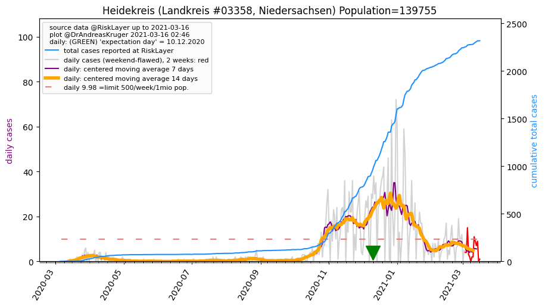Total cases: [0, 0, 0, 0, 0, 0, 0, 0, 0, 1, 1, 1, 1, 1, 2, 4, 4, 5, 6, 7, 10, 10, 15, 21, 21, 25, 25, 28, 30, 33, 36, 41, 41, 44, 44, 48, 52, 52, 52, 52, 52, 56, 57, 59, 61, 62, 62, 62, 63, 64, 65, 66, 66, 67]
Landkreis Heidekreis population: 139,755 --> current prevalence: 479 known infected per 1 million people.
Back to top or: Up to about.html
Leer (Landkreis #3457, Niedersachsen) Population=169809 AGS=3457
Neighbours within 50 km: Emden_KS, Aurich_LK, Ammerland_LK, Wittmund_LK, Friesland_LK, Cloppenburg_LK
 Total cases: [1, 1, 1, 1, 1, 1, 1, 1, 1, 1, 1, 3, 3, 7, 10, 12, 12, 13, 14, 14, 17, 20, 25, 28, 33, 34, 38, 41, 44, 49, 53, 54, 59, 62, 62, 63, 66, 66, 67, 69, 70, 72, 77, 80, 80, 85, 86, 86, 89, 90, 90, 91, 91, 93]
Total cases: [1, 1, 1, 1, 1, 1, 1, 1, 1, 1, 1, 3, 3, 7, 10, 12, 12, 13, 14, 14, 17, 20, 25, 28, 33, 34, 38, 41, 44, 49, 53, 54, 59, 62, 62, 63, 66, 66, 67, 69, 70, 72, 77, 80, 80, 85, 86, 86, 89, 90, 90, 91, 91, 93]
Landkreis Leer population: 169,809 --> current prevalence: 547 known infected per 1 million people.
Back to top or: Up to about.html
Salzgitter (Kreisfreie Stadt #3102, Niedersachsen) Population=104948 AGS=3102
Neighbours within 50 km: Wolfenbüttel_LK, Braunschweig_KS, Peine_LK, Goslar_LK, Hildesheim_LK, Helmstedt_LK, Wolfsburg_KS
 Total cases: [0, 0, 0, 0, 0, 0, 0, 0, 1, 1, 2, 2, 2, 3, 5, 10, 18, 23, 25, 26, 30, 34, 41, 44, 45, 45, 53, 55, 58, 61, 64, 67, 70, 72, 72, 85, 94, 97, 97, 97, 99, 100, 102, 107, 110, 113, 115, 117, 117, 119, 126, 126, 126, 127]
Total cases: [0, 0, 0, 0, 0, 0, 0, 0, 1, 1, 2, 2, 2, 3, 5, 10, 18, 23, 25, 26, 30, 34, 41, 44, 45, 45, 53, 55, 58, 61, 64, 67, 70, 72, 72, 85, 94, 97, 97, 97, 99, 100, 102, 107, 110, 113, 115, 117, 117, 119, 126, 126, 126, 127]
Kreisfreie Stadt Salzgitter population: 104,948 --> current prevalence: 1210 known infected per 1 million people.
Back to top or: Up to about.html
Emsland (Landkreis #3454, Niedersachsen) Population=325657 AGS=3454
Neighbours within 50 km: Cloppenburg_LK, Grafschaft Bentheim_LK
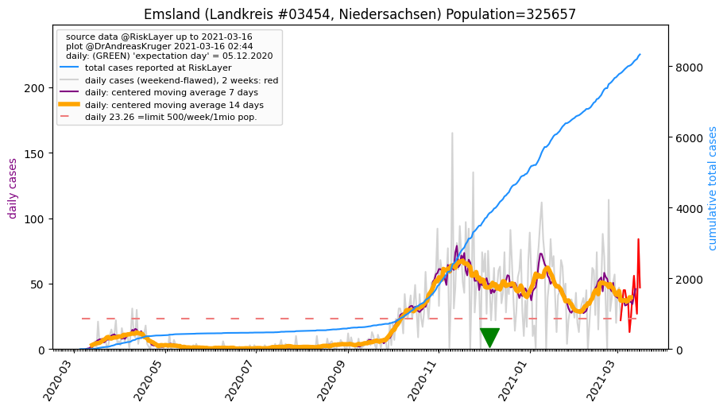Total cases: [0, 0, 0, 0, 0, 0, 1, 1, 3, 4, 10, 10, 31, 36, 43, 51, 56, 63, 64, 67, 78, 93, 102, 114, 136, 140, 146, 149, 165, 175, 181, 191, 200, 201, 213, 244, 255, 264, 294, 298, 309, 317, 330, 342, 360, 364, 366, 366, 371, 374, 379, 384, 384, 385]
Landkreis Emsland population: 325,657 --> current prevalence: 1182 known infected per 1 million people.
Back to top or: Up to about.html
Delmenhorst (Kreisfreie Stadt #3401, Niedersachsen) Population=77607 AGS=3401
Neighbours within 50 km: Bremen_KS, Oldenburg_LK, Osterholz_LK, Oldenburg (Oldb)_KS, Diepholz_LK, Verden_LK, Wesermarsch_LK, Ammerland_LK, Rotenburg (Wümme)_LK
 Total cases: [0, 1, 1, 1, 1, 1, 1, 1, 1, 5, 5, 5, 5, 5, 5, 8, 8, 8, 8, 8, 12, 13, 16, 17, 17, 17, 20, 22, 24, 24, 25, 26, 26, 26, 26, 27, 29, 29, 29, 31, 31, 31, 32, 33, 34, 34, 37, 37, 38, 40, 41, 41, 43, 44]
Total cases: [0, 1, 1, 1, 1, 1, 1, 1, 1, 5, 5, 5, 5, 5, 5, 8, 8, 8, 8, 8, 12, 13, 16, 17, 17, 17, 20, 22, 24, 24, 25, 26, 26, 26, 26, 27, 29, 29, 29, 31, 31, 31, 32, 33, 34, 34, 37, 37, 38, 40, 41, 41, 43, 44]
Kreisfreie Stadt Delmenhorst population: 77,607 --> current prevalence: 566 known infected per 1 million people.
Back to top or: Up to about.html
Schaumburg (Landkreis #3257, Niedersachsen) Population=157781 AGS=3257
Neighbours within 50 km: Hameln-Pyrmont_LK, Minden-Lübbecke_KR, Nienburg (Weser)_LK, Region Hannover_LK, Lippe_KR, Herford_KR
 Total cases: [0, 0, 0, 0, 0, 0, 0, 0, 1, 2, 2, 2, 4, 5, 12, 19, 23, 27, 29, 32, 32, 38, 44, 48, 53, 53, 53, 54, 59, 62, 71, 78, 81, 81, 83, 91, 106, 112, 120, 120, 122, 122, 125, 128, 132, 133, 140, 139, 138, 138, 139, 141, 142, 143]
Total cases: [0, 0, 0, 0, 0, 0, 0, 0, 1, 2, 2, 2, 4, 5, 12, 19, 23, 27, 29, 32, 32, 38, 44, 48, 53, 53, 53, 54, 59, 62, 71, 78, 81, 81, 83, 91, 106, 112, 120, 120, 122, 122, 125, 128, 132, 133, 140, 139, 138, 138, 139, 141, 142, 143]
Landkreis Schaumburg population: 157,781 --> current prevalence: 906 known infected per 1 million people.
Back to top or: Up to about.html
Grafschaft Bentheim (Landkreis #3456, Niedersachsen) Population=136511 AGS=3456
Neighbours within 50 km: Emsland_LK, Steinfurt_KR
 Total cases: [1, 1, 1, 1, 1, 1, 1, 1, 1, 3, 5, 5, 5, 11, 15, 23, 23, 29, 29, 29, 35, 44, 52, 62, 82, 84, 87, 92, 101, 109, 121, 130, 132, 137, 152, 160, 166, 170, 178, 180, 181, 186, 188, 196, 199, 205, 206, 206, 207, 209, 213, 213, 215, 216]
Total cases: [1, 1, 1, 1, 1, 1, 1, 1, 1, 3, 5, 5, 5, 11, 15, 23, 23, 29, 29, 29, 35, 44, 52, 62, 82, 84, 87, 92, 101, 109, 121, 130, 132, 137, 152, 160, 166, 170, 178, 180, 181, 186, 188, 196, 199, 205, 206, 206, 207, 209, 213, 213, 215, 216]
Landkreis Grafschaft Bentheim population: 136,511 --> current prevalence: 1582 known infected per 1 million people.
Back to top or: Up to about.html
Region Hannover (Landkreis #3241, Niedersachsen) Population=1157624 AGS=3241
Neighbours within 50 km: Schaumburg_LK, Peine_LK, Hildesheim_LK, Celle_LK, Hameln-Pyrmont_LK, Nienburg (Weser)_LK
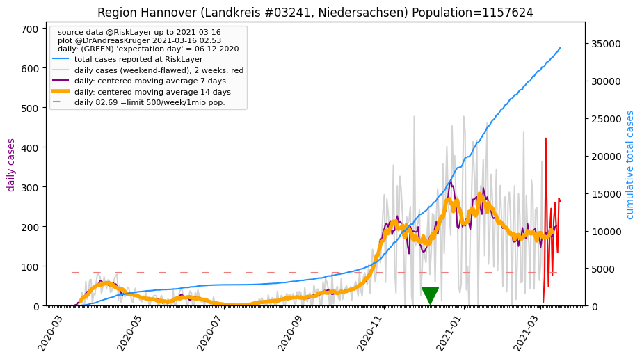Total cases: [2, 3, 3, 3, 4, 7, 11, 17, 25, 59, 60, 60, 121, 138, 173, 238, 304, 310, 341, 368, 428, 510, 588, 661, 692, 738, 811, 867, 911, 976, 1039, 1072, 1110, 1165, 1234, 1310, 1389, 1402, 1454, 1462, 1482, 1519, 1541, 1572, 1619, 1663, 1694, 1711, 1719, 1749, 1793, 1819, 1847, 1864]
Landkreis Region Hannover population: 1,157,624 --> current prevalence: 1610 known infected per 1 million people.
Back to top or: Up to about.html
Friesland (Landkreis #3455, Niedersachsen) Population=98460 AGS=3455
Neighbours within 50 km: Wilhelmshaven_KS, Wittmund_LK, Wesermarsch_LK, Ammerland_LK, Bremerhaven_KS, Aurich_LK, Oldenburg (Oldb)_KS, Leer_LK
 Total cases: [0, 0, 0, 0, 0, 0, 2, 2, 2, 2, 2, 2, 3, 3, 3, 3, 3, 5, 6, 6, 7, 7, 8, 9, 10, 10, 10, 12, 15, 18, 20, 20, 20, 22, 23, 24, 24, 24, 25, 25, 28, 28, 28, 28, 30, 30, 30, 31, 31, 31, 31, 31, 32, 32]
Total cases: [0, 0, 0, 0, 0, 0, 2, 2, 2, 2, 2, 2, 3, 3, 3, 3, 3, 5, 6, 6, 7, 7, 8, 9, 10, 10, 10, 12, 15, 18, 20, 20, 20, 22, 23, 24, 24, 24, 25, 25, 28, 28, 28, 28, 30, 30, 30, 31, 31, 31, 31, 31, 32, 32]
Landkreis Friesland population: 98,460 --> current prevalence: 325 known infected per 1 million people.
Back to top or: Up to about.html
Helmstedt (Landkreis #3154, Niedersachsen) Population=91307 AGS=3154
Neighbours within 50 km: Wolfsburg_KS, Braunschweig_KS, Wolfenbüttel_LK, Börde_LK, Salzgitter_KS, Gifhorn_LK, Peine_LK, Harz_LK
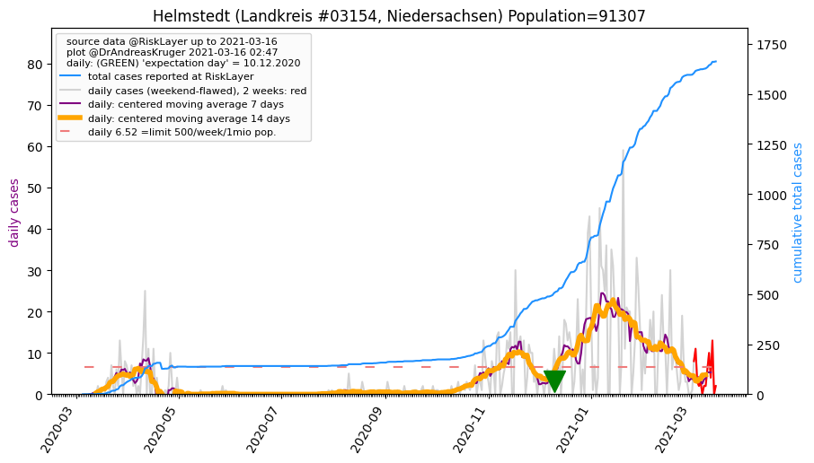Total cases: [0, 0, 0, 0, 0, 0, 0, 0, 0, 2, 2, 2, 2, 2, 5, 9, 9, 16, 18, 18, 24, 26, 39, 45, 45, 53, 60, 65, 69, 76, 78, 82, 82, 84, 84, 91, 105, 130, 130, 141, 141, 141, 152, 153, 157, 157, 157, 127, 127, 128, 128, 130, 140, 143]
Landkreis Helmstedt population: 91,307 --> current prevalence: 1566 known infected per 1 million people.
Back to top or: Up to about.html
Oldenburg (Landkreis #3458, Niedersachsen) Population=130144 AGS=3458
Neighbours within 50 km: Delmenhorst_KS, Oldenburg (Oldb)_KS, Bremen_KS, Cloppenburg_LK, Diepholz_LK, Ammerland_LK, Vechta_LK, Osterholz_LK, Wesermarsch_LK
 Total cases: [0, 1, 1, 1, 1, 1, 1, 1, 4, 4, 4, 4, 4, 8, 9, 12, 15, 16, 16, 16, 25, 33, 45, 56, 60, 96, 108, 113, 119, 146, 159, 159, 169, 169, 185, 182, 182, 190, 190, 190, 195, 202, 202, 203, 208, 208, 212, 216, 216, 216, 218, 225, 225, 226]
Total cases: [0, 1, 1, 1, 1, 1, 1, 1, 4, 4, 4, 4, 4, 8, 9, 12, 15, 16, 16, 16, 25, 33, 45, 56, 60, 96, 108, 113, 119, 146, 159, 159, 169, 169, 185, 182, 182, 190, 190, 190, 195, 202, 202, 203, 208, 208, 212, 216, 216, 216, 218, 225, 225, 226]
Landkreis Oldenburg population: 130,144 --> current prevalence: 1736 known infected per 1 million people.
Back to top or: Up to about.html
Diepholz (Landkreis #3251, Niedersachsen) Population=216886 AGS=3251
Neighbours within 50 km: Nienburg (Weser)_LK, Vechta_LK, Oldenburg_LK, Delmenhorst_KS, Minden-Lübbecke_KR, Verden_LK, Bremen_KS
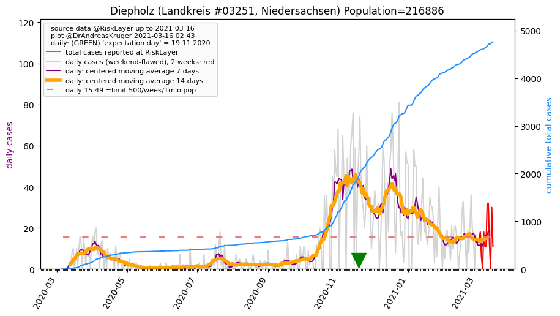Total cases: [0, 0, 0, 0, 0, 0, 0, 0, 3, 11, 21, 21, 25, 35, 37, 47, 63, 75, 75, 90, 100, 102, 111, 117, 126, 126, 138, 154, 166, 184, 204, 211, 221, 222, 233, 247, 255, 255, 264, 264, 274, 279, 287, 291, 295, 299, 299, 310, 316, 317, 323, 331, 334, 334]
Landkreis Diepholz population: 216,886 --> current prevalence: 1539 known infected per 1 million people.
Back to top or: Up to about.html
Wilhelmshaven (Kreisfreie Stadt #3405, Niedersachsen) Population=76278 AGS=3405
Neighbours within 50 km: Friesland_LK, Wittmund_LK, Wesermarsch_LK, Bremerhaven_KS, Ammerland_LK, Oldenburg (Oldb)_KS, Aurich_LK, Cuxhaven_LK
 Total cases: [0, 0, 0, 0, 0, 0, 2, 2, 2, 2, 2, 2, 3, 3, 5, 5, 5, 5, 5, 5, 6, 6, 6, 6, 6, 6, 6, 7, 7, 7, 8, 9, 10, 10, 11, 13, 13, 13, 13, 15, 15, 15, 16, 17, 17, 17, 17, 17, 17, 17, 17, 17, 17, 18]
Total cases: [0, 0, 0, 0, 0, 0, 2, 2, 2, 2, 2, 2, 3, 3, 5, 5, 5, 5, 5, 5, 6, 6, 6, 6, 6, 6, 6, 7, 7, 7, 8, 9, 10, 10, 11, 13, 13, 13, 13, 15, 15, 15, 16, 17, 17, 17, 17, 17, 17, 17, 17, 17, 17, 18]
Kreisfreie Stadt Wilhelmshaven population: 76,278 --> current prevalence: 235 known infected per 1 million people.
Back to top or: Up to about.html
Ammerland (Landkreis #3451, Niedersachsen) Population=124071 AGS=3451
Neighbours within 50 km: Oldenburg (Oldb)_KS, Wesermarsch_LK, Friesland_LK, Cloppenburg_LK, Oldenburg_LK, Leer_LK, Wilhelmshaven_KS, Wittmund_LK, Delmenhorst_KS
 Total cases: [1, 1, 1, 1, 1, 1, 1, 1, 1, 7, 7, 7, 7, 11, 14, 17, 20, 21, 24, 33, 36, 44, 50, 56, 64, 77, 82, 88, 93, 99, 103, 107, 111, 115, 119, 132, 138, 140, 141, 141, 149, 149, 153, 158, 160, 164, 165, 165, 167, 168, 168, 168, 169, 169]
Total cases: [1, 1, 1, 1, 1, 1, 1, 1, 1, 7, 7, 7, 7, 11, 14, 17, 20, 21, 24, 33, 36, 44, 50, 56, 64, 77, 82, 88, 93, 99, 103, 107, 111, 115, 119, 132, 138, 140, 141, 141, 149, 149, 153, 158, 160, 164, 165, 165, 167, 168, 168, 168, 169, 169]
Landkreis Ammerland population: 124,071 --> current prevalence: 1362 known infected per 1 million people.
Back to top or: Up to about.html
Uelzen (Landkreis #3360, Niedersachsen) Population=92572 AGS=3360
Neighbours within 50 km: Lüneburg_LK, Lüchow-Dannenberg_LK, Celle_LK, Gifhorn_LK
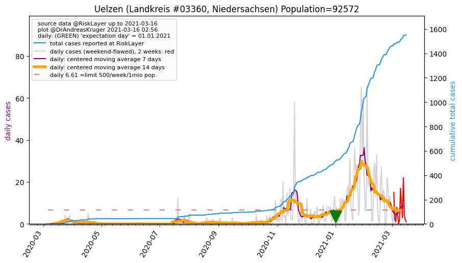Total cases: [0, 0, 0, 0, 0, 0, 0, 1, 1, 1, 1, 1, 1, 1, 3, 3, 5, 7, 7, 11, 12, 15, 16, 19, 23, 24, 25, 25, 26, 26, 27, 28, 29, 29, 29, 31, 33, 33, 33, 34, 34, 34, 34, 39, 41, 41, 41, 41, 41, 42, 42, 43, 43, 43]
Landkreis Uelzen population: 92,572 --> current prevalence: 464 known infected per 1 million people.
Back to top or: Up to about.html
Wolfsburg (Kreisfreie Stadt #3103, Niedersachsen) Population=124151 AGS=3103
Neighbours within 50 km: Helmstedt_LK, Gifhorn_LK, Braunschweig_KS, Wolfenbüttel_LK, Peine_LK, Altmarkkreis Salzwedel_LK, Salzgitter_KS, Börde_LK
 Total cases: [0, 0, 0, 0, 0, 0, 0, 0, 0, 2, 3, 3, 3, 4, 8, 10, 14, 16, 20, 28, 31, 40, 51, 98, 122, 145, 163, 171, 184, 195, 217, 217, 221, 222, 225, 228, 235, 241, 248, 248, 249, 249, 250, 253, 259, 266, 271, 272, 272, 277, 280, 280, 280, 282]
Total cases: [0, 0, 0, 0, 0, 0, 0, 0, 0, 2, 3, 3, 3, 4, 8, 10, 14, 16, 20, 28, 31, 40, 51, 98, 122, 145, 163, 171, 184, 195, 217, 217, 221, 222, 225, 228, 235, 241, 248, 248, 249, 249, 250, 253, 259, 266, 271, 272, 272, 277, 280, 280, 280, 282]
Kreisfreie Stadt Wolfsburg population: 124,151 --> current prevalence: 2271 known infected per 1 million people.
Back to top or: Up to about.html
Cuxhaven (Landkreis #3352, Niedersachsen) Population=198213 AGS=3352
Neighbours within 50 km: Bremerhaven_KS, Wesermarsch_LK, Stade_LK, Osterholz_LK, Wilhelmshaven_KS
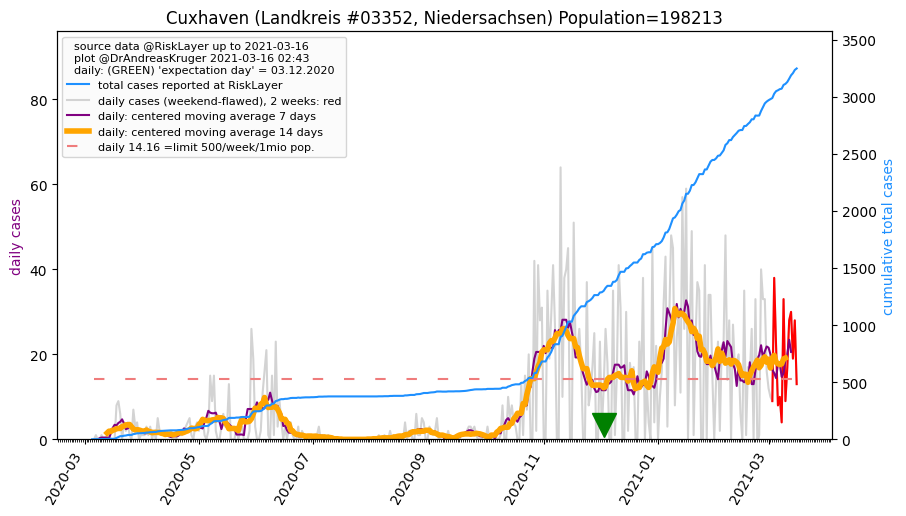Total cases: [1, 1, 2, 2, 2, 3, 3, 3, 4, 5, 5, 5, 5, 13, 22, 28, 28, 32, 34, 38, 39, 39, 46, 49, 53, 53, 54, 55, 56, 59, 60, 63, 63, 65, 65, 70, 72, 74, 75, 76, 77, 78, 79, 79, 79, 79, 81, 82, 83, 85, 88, 92, 97, 98]
Landkreis Cuxhaven population: 198,213 --> current prevalence: 494 known infected per 1 million people.
Back to top or: Up to about.html
Braunschweig (Kreisfreie Stadt #3101, Niedersachsen) Population=248292 AGS=3101
Neighbours within 50 km: Wolfenbüttel_LK, Peine_LK, Salzgitter_KS, Wolfsburg_KS, Helmstedt_LK, Gifhorn_LK, Hildesheim_LK, Goslar_LK
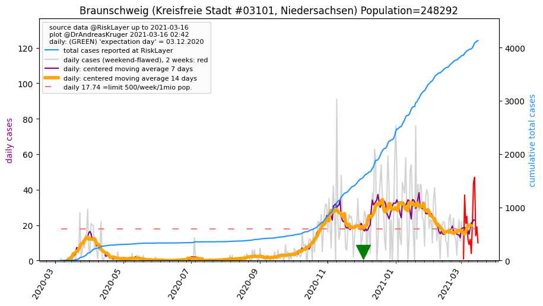Total cases: [0, 1, 1, 1, 1, 1, 1, 1, 2, 2, 5, 5, 8, 12, 13, 18, 25, 29, 56, 58, 63, 73, 80, 94, 109, 138, 144, 148, 169, 189, 209, 216, 225, 231, 232, 241, 247, 269, 271, 271, 273, 275, 279, 284, 287, 289, 291, 291, 292, 292, 294, 294, 299, 300]
Kreisfreie Stadt Braunschweig population: 248,292 --> current prevalence: 1208 known infected per 1 million people.
Back to top or: Up to about.html
Hameln-Pyrmont (Landkreis #3252, Niedersachsen) Population=148559 AGS=3252
Neighbours within 50 km: Schaumburg_LK, Holzminden_LK, Lippe_KR, Hildesheim_LK, Region Hannover_LK, Höxter_KR
 Total cases: [0, 0, 0, 0, 0, 0, 0, 1, 1, 2, 3, 3, 7, 9, 13, 19, 23, 26, 27, 28, 28, 32, 38, 44, 60, 70, 70, 73, 79, 82, 83, 89, 89, 89, 92, 94, 97, 99, 100, 100, 102, 103, 108, 109, 112, 114, 116, 116, 120, 122, 122, 123, 123, 123]
Total cases: [0, 0, 0, 0, 0, 0, 0, 1, 1, 2, 3, 3, 7, 9, 13, 19, 23, 26, 27, 28, 28, 32, 38, 44, 60, 70, 70, 73, 79, 82, 83, 89, 89, 89, 92, 94, 97, 99, 100, 100, 102, 103, 108, 109, 112, 114, 116, 116, 120, 122, 122, 123, 123, 123]
Landkreis Hameln-Pyrmont population: 148,559 --> current prevalence: 827 known infected per 1 million people.
Back to top or: Up to about.html
Vechta (Landkreis #3460, Niedersachsen) Population=141598 AGS=3460
Neighbours within 50 km: Diepholz_LK, Osnabrück_LK, Cloppenburg_LK, Oldenburg_LK, Osnabrück_KS, Minden-Lübbecke_KR
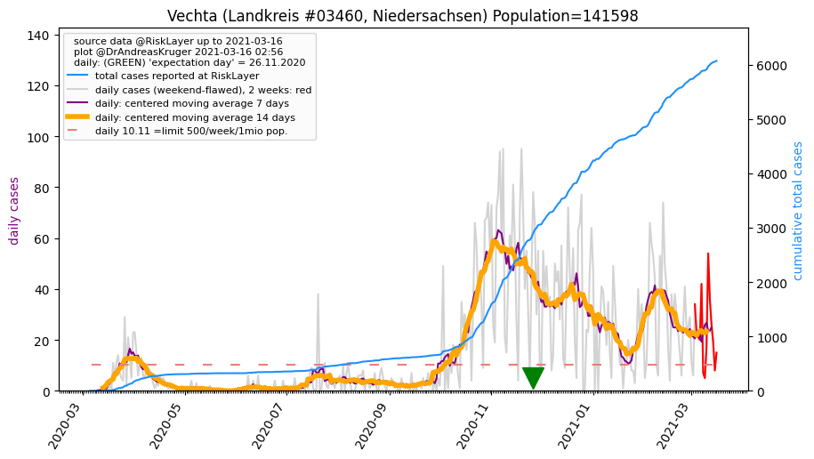Total cases: [0, 0, 0, 0, 0, 0, 0, 0, 2, 2, 3, 3, 6, 6, 17, 22, 33, 47, 54, 59, 63, 92, 94, 115, 128, 133, 156, 179, 194, 200, 211, 224, 230, 235, 244, 253, 261, 268, 271, 272, 275, 277, 283, 287, 292, 296, 298, 299, 300, 302, 304, 305, 306, 307]
Landkreis Vechta population: 141,598 --> current prevalence: 2168 known infected per 1 million people.
Back to top or: Up to about.html
Celle (Landkreis #3351, Niedersachsen) Population=178936 AGS=3351
Neighbours within 50 km: Heidekreis_LK, Gifhorn_LK, Region Hannover_LK, Uelzen_LK, Peine_LK
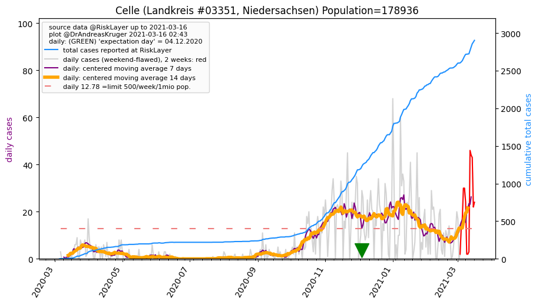Total cases: [0, 3, 3, 3, 3, 3, 4, 5, 6, 6, 8, 8, 12, 15, 21, 27, 36, 36, 36, 44, 50, 55, 61, 69, 70, 72, 89, 98, 102, 106, 110, 110, 110, 116, 119, 124, 129, 129, 134, 134, 140, 144, 145, 152, 153, 153, 153, 155, 156, 158, 161, 164, 164, 164]
Landkreis Celle population: 178,936 --> current prevalence: 916 known infected per 1 million people.
Back to top or: Up to about.html
Lüchow-Dannenberg (Landkreis #3354, Niedersachsen) Population=48424 AGS=3354
Neighbours within 50 km: Altmarkkreis Salzwedel_LK, Uelzen_LK, Lüneburg_LK
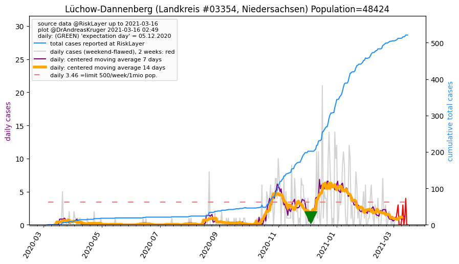Total cases: [0, 0, 0, 0, 0, 0, 0, 0, 0, 0, 0, 0, 0, 0, 0, 1, 6, 6, 6, 6, 6, 7, 7, 9, 9, 9, 8, 8, 10, 11, 12, 12, 13, 13, 14, 14, 14, 14, 14, 14, 14, 14, 15, 15, 15, 15, 15, 15, 15, 17, 17, 17, 17, 17]
Landkreis Lüchow-Dannenberg population: 48,424 --> current prevalence: 351 known infected per 1 million people.
Back to top or: Up to about.html
Hildesheim (Landkreis #3254, Niedersachsen) Population=276594 AGS=3254
Neighbours within 50 km: Salzgitter_KS, Peine_LK, Holzminden_LK, Hameln-Pyrmont_LK, Northeim_LK, Goslar_LK, Region Hannover_LK, Wolfenbüttel_LK, Braunschweig_KS
 Total cases: [0, 0, 0, 2, 2, 2, 3, 3, 3, 3, 14, 31, 31, 44, 66, 84, 89, 97, 97, 100, 114, 123, 144, 152, 152, 152, 153, 161, 172, 180, 189, 197, 197, 197, 204, 211, 215, 224, 226, 227, 227, 230, 237, 251, 259, 262, 269, 273, 277, 285, 290, 290, 292, 292]
Total cases: [0, 0, 0, 2, 2, 2, 3, 3, 3, 3, 14, 31, 31, 44, 66, 84, 89, 97, 97, 100, 114, 123, 144, 152, 152, 152, 153, 161, 172, 180, 189, 197, 197, 197, 204, 211, 215, 224, 226, 227, 227, 230, 237, 251, 259, 262, 269, 273, 277, 285, 290, 290, 292, 292]
Landkreis Hildesheim population: 276,594 --> current prevalence: 1055 known infected per 1 million people.
Back to top or: Up to about.html
Peine (Landkreis #3157, Niedersachsen) Population=133965 AGS=3157
Neighbours within 50 km: Braunschweig_KS, Salzgitter_KS, Wolfenbüttel_LK, Hildesheim_LK, Wolfsburg_KS, Region Hannover_LK, Gifhorn_LK, Helmstedt_LK, Celle_LK, Goslar_LK
 Total cases: [0, 0, 0, 0, 0, 0, 0, 0, 0, 0, 2, 2, 2, 8, 8, 11, 15, 20, 21, 21, 25, 31, 40, 40, 54, 62, 77, 90, 94, 99, 105, 108, 110, 110, 117, 122, 124, 125, 126, 127, 127, 127, 129, 131, 132, 133, 133, 133, 135, 135, 136, 136, 137, 137]
Total cases: [0, 0, 0, 0, 0, 0, 0, 0, 0, 0, 2, 2, 2, 8, 8, 11, 15, 20, 21, 21, 25, 31, 40, 40, 54, 62, 77, 90, 94, 99, 105, 108, 110, 110, 117, 122, 124, 125, 126, 127, 127, 127, 129, 131, 132, 133, 133, 133, 135, 135, 136, 136, 137, 137]
Landkreis Peine population: 133,965 --> current prevalence: 1022 known infected per 1 million people.
Back to top or: Up to about.html
Osnabrück (Kreisfreie Stadt #3404, Niedersachsen) Population=164748 AGS=3404
Neighbours within 50 km: Osnabrück_LK, Steinfurt_KR, Herford_KR, Gütersloh_KR, Vechta_LK, Bielefeld_KS, Warendorf_KR, Münster_KS, Minden-Lübbecke_KR
 Total cases: [0, 0, 0, 0, 0, 1, 1, 1, 7, 7, 19, 19, 38, 54, 62, 83, 101, 108, 119, 135, 145, 174, 197, 199, 215, 224, 249, 259, 267, 276, 285, 300, 312, 322, 332, 368, 377, 382, 400, 404, 404, 409, 416, 425, 434, 437, 437, 446, 447, 450, 453, 454, 458, 458]
Total cases: [0, 0, 0, 0, 0, 1, 1, 1, 7, 7, 19, 19, 38, 54, 62, 83, 101, 108, 119, 135, 145, 174, 197, 199, 215, 224, 249, 259, 267, 276, 285, 300, 312, 322, 332, 368, 377, 382, 400, 404, 404, 409, 416, 425, 434, 437, 437, 446, 447, 450, 453, 454, 458, 458]
Kreisfreie Stadt Osnabrück population: 164,748 --> current prevalence: 2780 known infected per 1 million people.
Back to top or: Up to about.html
Rotenburg (Wümme) (Landkreis #3357, Niedersachsen) Population=163455 AGS=3357
Neighbours within 50 km: Verden_LK, Osterholz_LK, Stade_LK, Bremen_KS, Harburg_LK, Heidekreis_LK, Delmenhorst_KS
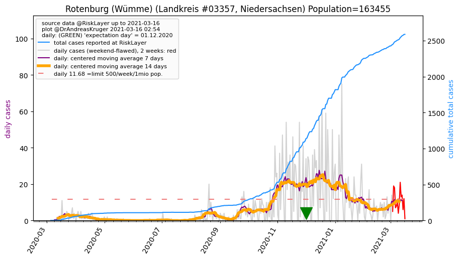Total cases: [2, 2, 2, 2, 2, 2, 3, 5, 5, 5, 7, 7, 18, 18, 19, 22, 25, 30, 34, 34, 36, 38, 42, 49, 50, 54, 55, 55, 58, 63, 66, 67, 72, 73, 75, 76, 78, 79, 81, 82, 86, 87, 88, 92, 96, 96, 96, 97, 97, 98, 98, 99, 99, 100]
Landkreis Rotenburg (Wümme) population: 163,455 --> current prevalence: 611 known infected per 1 million people.
Back to top or: Up to about.html
Oldenburg (Oldb) (Kreisfreie Stadt #3403, Niedersachsen) Population=168210 AGS=3403
Neighbours within 50 km: Ammerland_LK, Oldenburg_LK, Wesermarsch_LK, Delmenhorst_KS, Cloppenburg_LK, Bremen_KS, Osterholz_LK, Friesland_LK, Wilhelmshaven_KS
 Total cases: [1, 1, 1, 2, 2, 2, 6, 6, 6, 11, 11, 11, 18, 25, 26, 30, 31, 31, 31, 49, 61, 74, 76, 91, 91, 91, 107, 111, 116, 130, 143, 143, 143, 159, 162, 173, 184, 184, 184, 184, 184, 189, 190, 190, 194, 194, 194, 196, 196, 196, 202, 202, 202, 202]
Total cases: [1, 1, 1, 2, 2, 2, 6, 6, 6, 11, 11, 11, 18, 25, 26, 30, 31, 31, 31, 49, 61, 74, 76, 91, 91, 91, 107, 111, 116, 130, 143, 143, 143, 159, 162, 173, 184, 184, 184, 184, 184, 189, 190, 190, 194, 194, 194, 196, 196, 196, 202, 202, 202, 202]
Kreisfreie Stadt Oldenburg (Oldb) population: 168,210 --> current prevalence: 1200 known infected per 1 million people.
Back to top or: Up to about.html
Holzminden (Landkreis #3255, Niedersachsen) Population=70975 AGS=3255
Neighbours within 50 km: Northeim_LK, Hameln-Pyrmont_LK, Höxter_KR, Hildesheim_LK, Lippe_KR, Göttingen_LK
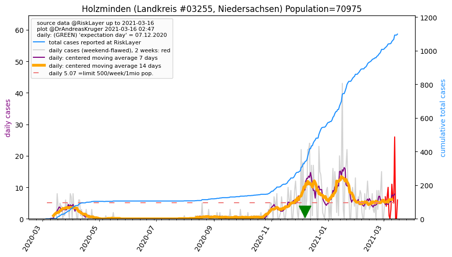Total cases: [0, 0, 0, 0, 0, 0, 0, 0, 1, 1, 1, 1, 9, 13, 14, 19, 23, 27, 27, 29, 30, 36, 39, 44, 47, 47, 55, 62, 62, 70, 73, 76, 79, 79, 79, 85, 91, 92, 95, 95, 95, 95, 95, 98, 99, 99, 99, 100, 100, 103, 103, 104, 104, 104]
Landkreis Holzminden population: 70,975 --> current prevalence: 1465 known infected per 1 million people.
Back to top or: Up to about.html
Wittmund (Landkreis #3462, Niedersachsen) Population=56882 AGS=3462
Neighbours within 50 km: Friesland_LK, Aurich_LK, Wilhelmshaven_KS, Leer_LK, Emden_KS, Ammerland_LK
 Total cases: [0, 0, 0, 0, 0, 0, 0, 1, 1, 1, 1, 1, 3, 3, 3, 4, 4, 4, 4, 6, 6, 8, 10, 14, 16, 16, 15, 15, 15, 16, 16, 16, 16, 16, 19, 20, 20, 20, 20, 20, 21, 21, 21, 21, 22, 22, 24, 24, 24, 24, 24, 24, 24, 24]
Total cases: [0, 0, 0, 0, 0, 0, 0, 1, 1, 1, 1, 1, 3, 3, 3, 4, 4, 4, 4, 6, 6, 8, 10, 14, 16, 16, 15, 15, 15, 16, 16, 16, 16, 16, 19, 20, 20, 20, 20, 20, 21, 21, 21, 21, 22, 22, 24, 24, 24, 24, 24, 24, 24, 24]
Landkreis Wittmund population: 56,882 --> current prevalence: 421 known infected per 1 million people.
Back to top or: Up to about.html
Nienburg (Weser) (Landkreis #3256, Niedersachsen) Population=121386 AGS=3256
Neighbours within 50 km: Diepholz_LK, Schaumburg_LK, Minden-Lübbecke_KR, Verden_LK, Region Hannover_LK
 Total cases: [0, 0, 0, 0, 0, 0, 0, 0, 2, 2, 2, 2, 5, 6, 6, 8, 15, 15, 17, 19, 21, 22, 22, 24, 26, 27, 29, 36, 38, 39, 42, 42, 52, 52, 54, 56, 60, 60, 60, 60, 60, 60, 62, 62, 63, 63, 63, 64, 64, 64, 64, 64, 64, 64]
Total cases: [0, 0, 0, 0, 0, 0, 0, 0, 2, 2, 2, 2, 5, 6, 6, 8, 15, 15, 17, 19, 21, 22, 22, 24, 26, 27, 29, 36, 38, 39, 42, 42, 52, 52, 54, 56, 60, 60, 60, 60, 60, 60, 62, 62, 63, 63, 63, 64, 64, 64, 64, 64, 64, 64]
Landkreis Nienburg (Weser) population: 121,386 --> current prevalence: 527 known infected per 1 million people.
Back to top or: Up to about.html
Gifhorn (Landkreis #3151, Niedersachsen) Population=175920 AGS=3151
Neighbours within 50 km: Wolfsburg_KS, Braunschweig_KS, Celle_LK, Peine_LK, Helmstedt_LK, Altmarkkreis Salzwedel_LK, Uelzen_LK
 Total cases: [0, 0, 0, 0, 0, 0, 0, 0, 0, 5, 7, 7, 16, 20, 23, 26, 32, 34, 34, 37, 39, 43, 48, 53, 62, 62, 68, 78, 77, 87, 92, 95, 96, 99, 103, 107, 106, 106, 109, 109, 109, 110, 115, 119, 122, 123, 122, 122, 122, 122, 123, 124, 124, 124]
Total cases: [0, 0, 0, 0, 0, 0, 0, 0, 0, 5, 7, 7, 16, 20, 23, 26, 32, 34, 34, 37, 39, 43, 48, 53, 62, 62, 68, 78, 77, 87, 92, 95, 96, 99, 103, 107, 106, 106, 109, 109, 109, 110, 115, 119, 122, 123, 122, 122, 122, 122, 123, 124, 124, 124]
Landkreis Gifhorn population: 175,920 --> current prevalence: 704 known infected per 1 million people.
Back to top or: Up to about.html
Lüneburg (Landkreis #3355, Niedersachsen) Population=183372 AGS=3355
Neighbours within 50 km: Uelzen_LK, Herzogtum Lauenburg_KR, Harburg_LK, Lüchow-Dannenberg_LK
 Total cases: [0, 0, 0, 0, 0, 0, 0, 0, 1, 1, 3, 3, 6, 26, 42, 45, 53, 54, 61, 61, 65, 69, 71, 75, 82, 82, 82, 97, 100, 108, 113, 119, 120, 122, 125, 132, 134, 140, 144, 145, 148, 154, 157, 162, 166, 168, 168, 168, 168, 164, 164, 164, 164, 164]
Total cases: [0, 0, 0, 0, 0, 0, 0, 0, 1, 1, 3, 3, 6, 26, 42, 45, 53, 54, 61, 61, 65, 69, 71, 75, 82, 82, 82, 97, 100, 108, 113, 119, 120, 122, 125, 132, 134, 140, 144, 145, 148, 154, 157, 162, 166, 168, 168, 168, 168, 164, 164, 164, 164, 164]
Landkreis Lüneburg population: 183,372 --> current prevalence: 894 known infected per 1 million people.
Back to top or: Up to about.html
Aurich (Landkreis #3452, Niedersachsen) Population=189848 AGS=3452
Neighbours within 50 km: Emden_KS, Wittmund_LK, Leer_LK, Friesland_LK, Wilhelmshaven_KS
 Total cases: [0, 0, 0, 0, 0, 0, 1, 1, 1, 3, 12, 12, 16, 17, 22, 27, 27, 31, 31, 31, 34, 41, 48, 48, 49, 49, 54, 58, 64, 69, 71, 71, 72, 72, 74, 78, 78, 79, 79, 79, 79, 80, 80, 80, 80, 80, 82, 84, 86, 89, 90, 92, 92, 92]
Total cases: [0, 0, 0, 0, 0, 0, 1, 1, 1, 3, 12, 12, 16, 17, 22, 27, 27, 31, 31, 31, 34, 41, 48, 48, 49, 49, 54, 58, 64, 69, 71, 71, 72, 72, 74, 78, 78, 79, 79, 79, 79, 80, 80, 80, 80, 80, 82, 84, 86, 89, 90, 92, 92, 92]
Landkreis Aurich population: 189,848 --> current prevalence: 484 known infected per 1 million people.
Back to top or: Up to about.html
Verden (Landkreis #3361, Niedersachsen) Population=136792 AGS=3361
Neighbours within 50 km: Bremen_KS, Rotenburg (Wümme)_LK, Delmenhorst_KS, Osterholz_LK, Heidekreis_LK, Nienburg (Weser)_LK, Diepholz_LK
 Total cases: [0, 0, 0, 0, 0, 0, 2, 3, 5, 8, 8, 8, 12, 14, 20, 23, 24, 26, 27, 33, 37, 37, 43, 48, 50, 57, 58, 73, 80, 82, 96, 96, 96, 100, 106, 107, 107, 107, 107, 107, 107, 110, 111, 113, 113, 113, 113, 114, 114, 116, 116, 116, 116, 116]
Total cases: [0, 0, 0, 0, 0, 0, 2, 3, 5, 8, 8, 8, 12, 14, 20, 23, 24, 26, 27, 33, 37, 37, 43, 48, 50, 57, 58, 73, 80, 82, 96, 96, 96, 100, 106, 107, 107, 107, 107, 107, 107, 110, 111, 113, 113, 113, 113, 114, 114, 116, 116, 116, 116, 116]
Landkreis Verden population: 136,792 --> current prevalence: 848 known infected per 1 million people.
Back to top or: Up to about.html
Osterholz (Landkreis #3356, Niedersachsen) Population=113517 AGS=3356
Neighbours within 50 km: Bremen_KS, Delmenhorst_KS, Wesermarsch_LK, Rotenburg (Wümme)_LK, Bremerhaven_KS, Verden_LK, Oldenburg_LK, Cuxhaven_LK, Oldenburg (Oldb)_KS
 Total cases: [0, 0, 0, 0, 0, 0, 2, 2, 8, 12, 12, 12, 16, 20, 20, 22, 24, 24, 24, 27, 29, 32, 36, 42, 42, 42, 49, 50, 55, 56, 57, 57, 57, 60, 60, 64, 64, 64, 65, 68, 68, 71, 73, 73, 73, 73, 74, 74, 75, 76, 78, 79, 79, 79]
Total cases: [0, 0, 0, 0, 0, 0, 2, 2, 8, 12, 12, 12, 16, 20, 20, 22, 24, 24, 24, 27, 29, 32, 36, 42, 42, 42, 49, 50, 55, 56, 57, 57, 57, 60, 60, 64, 64, 64, 65, 68, 68, 71, 73, 73, 73, 73, 74, 74, 75, 76, 78, 79, 79, 79]
Landkreis Osterholz population: 113,517 --> current prevalence: 695 known infected per 1 million people.
Back to top or: Up to about.html
Stade (Landkreis #3359, Niedersachsen) Population=203102 AGS=3359
Neighbours within 50 km: Pinneberg_KR, Rotenburg (Wümme)_LK, Steinburg_KR, Hamburg_KS, Cuxhaven_LK, Harburg_LK
 Total cases: [0, 1, 1, 2, 6, 11, 11, 13, 14, 17, 21, 21, 24, 28, 33, 37, 43, 58, 58, 66, 73, 80, 92, 103, 105, 109, 115, 117, 123, 127, 135, 141, 152, 153, 156, 160, 162, 165, 170, 170, 172, 173, 176, 177, 177, 177, 179, 177, 177, 180, 182, 184, 185, 185]
Total cases: [0, 1, 1, 2, 6, 11, 11, 13, 14, 17, 21, 21, 24, 28, 33, 37, 43, 58, 58, 66, 73, 80, 92, 103, 105, 109, 115, 117, 123, 127, 135, 141, 152, 153, 156, 160, 162, 165, 170, 170, 172, 173, 176, 177, 177, 177, 179, 177, 177, 180, 182, 184, 185, 185]
Landkreis Stade population: 203,102 --> current prevalence: 910 known infected per 1 million people.
Back to top or: Up to about.html
Emden (Kreisfreie Stadt #3402, Niedersachsen) Population=50195 AGS=3402
Neighbours within 50 km: Aurich_LK, Leer_LK, Wittmund_LK
 Total cases: [0, 0, 0, 0, 0, 0, 0, 0, 3, 3, 3, 3, 4, 4, 7, 7, 7, 8, 8, 8, 8, 9, 9, 9, 9, 9, 7, 8, 10, 8, 8, 10, 11, 12, 13, 14, 14, 14, 14, 14, 14, 14, 14, 15, 15, 15, 15, 15, 15, 16, 16, 16, 16, 16]
Total cases: [0, 0, 0, 0, 0, 0, 0, 0, 3, 3, 3, 3, 4, 4, 7, 7, 7, 8, 8, 8, 8, 9, 9, 9, 9, 9, 7, 8, 10, 8, 8, 10, 11, 12, 13, 14, 14, 14, 14, 14, 14, 14, 14, 15, 15, 15, 15, 15, 15, 16, 16, 16, 16, 16]
Kreisfreie Stadt Emden population: 50,195 --> current prevalence: 318 known infected per 1 million people.
Back to top or: Up to about.html
Wesermarsch (Landkreis #3461, Niedersachsen) Population=88624 AGS=3461
Neighbours within 50 km: Bremerhaven_KS, Oldenburg (Oldb)_KS, Ammerland_LK, Osterholz_LK, Wilhelmshaven_KS, Friesland_LK, Bremen_KS, Delmenhorst_KS, Cuxhaven_LK, Oldenburg_LK
 Total cases: [0, 0, 0, 0, 0, 0, 0, 0, 0, 0, 0, 0, 0, 0, 4, 4, 5, 5, 9, 11, 13, 20, 26, 32, 38, 39, 40, 42, 43, 45, 47, 47, 47, 48, 48, 48, 49, 49, 49, 49, 51, 52, 52, 52, 52, 52, 52, 52, 52, 52, 52, 52, 52, 52]
Total cases: [0, 0, 0, 0, 0, 0, 0, 0, 0, 0, 0, 0, 0, 0, 4, 4, 5, 5, 9, 11, 13, 20, 26, 32, 38, 39, 40, 42, 43, 45, 47, 47, 47, 48, 48, 48, 49, 49, 49, 49, 51, 52, 52, 52, 52, 52, 52, 52, 52, 52, 52, 52, 52, 52]
Landkreis Wesermarsch population: 88,624 --> current prevalence: 586 known infected per 1 million people.
Back to top or: Up to about.html